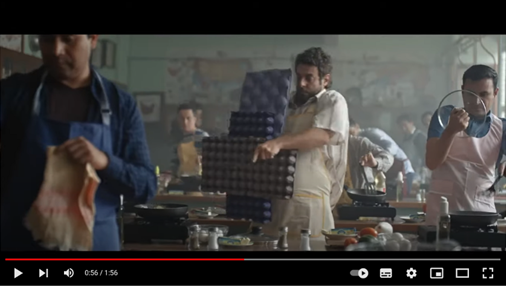

Resumen.
El objetivo del trabajo es analizar la campaña publicitaria de una marca mexicana para explicar el papel que las estrategias femvertising y menvertising tienen en la modificación de los estereotipos tradicionales y la construcción de nuevas identidades masculinas y femeninas. Se utiliza una metodología de análisis de contenido a partir de los principios del femvertising propuestos por Becker Herby (2016) y adaptados por Pando-Canteli y Rodríguez (2021) para analizar el menvertising, así como las características de las identidades femeninas y masculinas (Montesinos, 2014; Montesinos y Carrillo; 2010). Los resultados obtenidos en esta investigación identifican la representación de hombres mexicanos asumiendo la responsabilidad de las actividades del hogar y cuidado, así como una narrativa que se alinea con las nuevas prácticas masculinas que se promueven socialmente y con la representación femenina que sigue vinculada con la sumisión y el trabajo doméstico. Entre las limitaciones e implicaciones sociales y las principales aportaciones del trabajo, se reconoce que existe una reducida cantidad de investigaciones empíricas que discuten sobre las estrategias publicitarias femvertising y menvertising y su papel en la configuración de identidades femeninas y masculinas, sin embargo, desde el papel social de la publicidad, se reconoce la influencia en la modificación de estereotipos tradicionales asociados a hombres y mujeres y por ende en la construcción de identidades, por lo que ambas estrategias se pueden considerar ProFem.
Palabras clave:
estrategias publicitarias, ProFem, nuevas identidades, género
Abstract.
This paper aims to analyze a Mexican brand's advertising campaign to explain the role that femvertising and menvertising strategies have in the modification of traditional stereotypes and the construction of new masculine and feminine identities. A content analysis methodology is used based on the principles of femvertising proposed by Becker-Herby (2016) and adapted by Pando-Canteli & Rodriguez (2021) to analyze menvertising, as well as the characteristics of feminine and masculine identities (Montesinos, 2014; Montesinos & Carrillo; 2010). The results obtained in this research identify the representation of Mexican men assuming responsibility for household and care activities, as well as a narrative that aligns with the new masculine practices that are socially promoted and with the feminine representation that continues to be linked to submission and domestic work. Among the limitations and social implications and the main contributions of the work, it is recognized that there is a small amount of empirical research that discusses the advertising strategies of femvertising and menvertising and their role in the configuration of feminine and masculine identities, however, from the social role of advertising, the influence in the modification of traditional stereotypes associated with men and women and therefore in the construction of identities is recognized, so that both strategies can be considered ProFem.
Keywords:
advertising strategies, ProFem, new identities, gender
Introducción
Las desigualdades que generan los estereotipos de género que se utilizan en la publicidad son uno de los problemas que atrae la reflexión y discusión académica de diferentes disciplinas desde los años sesenta. Se critica fuertemente las formas de representación de las mujeres y los hombres, pero también la sobregeneralización pensada desde la disolución de lo femenino en lo masculino y la sobre especificación en la búsqueda de necesidades, actitudes o intereses hacia un solo género (Viedma, 2003). Recientemente, se suman a esta discusión, los efectos que tiene el sexismo publicitario con el aumento de la violencia de género, traducidos en acoso, abuso de poder e incluso en el asesinato de mujeres, que se permea a partir de la imposición de roles entre hombres y mujeres ligados a actitudes, actividades y contextos, tanto públicos como privados, en los que se desenvuelven ambos.
Desde la teoría del rol social es posible explicar la configuración de estereotipos utilizados en la publicidad, a partir del rol que asume cada grupo en el entorno social, es decir, las creencias, los procesos de socialización y los procesos individuales que favorecen los comportamientos diferenciados entre hombres y mujeres, lo cual limita el desarrollo integral de las personas con relación a sus aspiraciones, motivaciones, capacidades, estados mentales y físicos, entre otros (Castillo Mayén y Montes Berges, 2014). En este sentido, a partir del inicio del siglo XX, la construcción de estereotipos se centra en asumir socialmente dicotomías claramente excluyentes entre hombres y mujeres, donde a la mujer se le muestra publicitariamente con falta de control, inestabilidad emocional, pasividad, sumisión, ternura, dependencia, irracionalidad, poco desarrollo intelectual, como objeto sexual y tomando el rol de madre, esposa, ama de casa, mujer perfecta o ideal; sin embargo, a los hombres se les muestra con autocontrol, dinamismo, estabilidad emocional, agresividad, valentía, racionalidad, objetividad y con roles dominantes como jefe de familia, deportista o ejecutivo (Carpio Jiménez, 2020; De Francisco Heredero, 2019; Sau, 1989; Viedma, 2003).
No obstante, es posible reconocer que en la última década la publicidad ha sufrido una transformación con respecto a la representación de hombres y mujeres en sus spots y mensajes publicitarios, algunas marcas se han sumado a la confrontación de estereotipos tradicionales como parte de una campaña de responsabilidad social, pero también para aliarse a segmentos de jóvenes, mujeres y hombres, que tienen una concepción distinta de la vida, desestimando los esquemas patriarcales y los estereotipos atribuidos a ambos sexos. De esta manera, surgen la femvertising, el dadvertising y el menvertising como estrategias publicitarias que parecen estar ligadas a las crecientes demandas sociales de movimientos como el #MeToo, las marchas del 8M, The Black Lives Matter y los reclamos de la comunidad LGBTQIA+ para romper con los estereotipos y roles tradicionales, por lo que algunas marcas tanto internacionales como locales, se han sumado a esta tendencia en un intento de legitimación con los consumidores.
En este punto es importante señalar que coincidimos con Leader (2019), cuando señala que tanto la femvertising, como el dadvertising y ahora el menvertising, sirven a objetivos comerciales y no culturales o políticos, pero, también con Schroeder y Zwick (2004), en que las representaciones de género se construyen socialmente y es así como las campañas publicitarias, que desde el alcance que tienen a nivel masivo, modifican los estereotipos de género a partir de las imágenes y la iconografía que representa a hombres y mujeres, por lo que la femvertising y el menvertising se promueven como aliados de las demandas sociales sobre la equidad que se han intensificado en los últimos años y se pueden considerar estrategias publicitarias en pro del feminismo (ProFem).
A la publicidad ProFem definida por Menendez (2019), y que hace alusión al fin último de la femvertising, le sumamos las estrategias del dadvertising y el menvertising, consideramos que estas últimas, también se muestran en favor del feminismo al tratar de representar a los hombres en espacios alejados del poder y la fuerza, en arquetipos asociados a la paternidad, la inclusión y la equidad en el trabajo doméstico, por lo que las tres estrategias buscan reconfigurar la imagen de hombres y mujeres que se muestra a través de sus mensajes publicitarios, es decir, mientras que la femvertising se postula como una herramienta que promueve la autoestima y autorrealización de las mujeres, las denominadas dadvertising y menvertising, buscan a través de sus contenidos modificar la representación tradicional de la masculinidad y acercarlos a contextos domésticos en donde las emociones y las actividades del cuidado familiar y del hogar se encuentren presentes.
Así, esta investigación contribuye a la discusión sobre la representación de estereotipos y roles de hombres y mujeres en la publicidad ProFem, ya que su objetivo es analizar la campaña publicitaria de una marca mexicana para explicar el papel que este tipo de estrategia publicitaria tiene en la construcción de nuevas identidades masculinas y femeninas que buscan modificar los estereotipos tradicionales. El trabajo se sitúa a nivel regional, por el papel que tienen la cultura, los valores, la economía y las características sociodemográficas en la construcción de estereotipos de género (Connell y Messerschmidt, 2005), y se elige en particular una marca de lácteos: La Villita, que desde 2017 ha lanzado una serie de campañas publicitarias que se identifican como ProFem.
Estrategia Femvertising, estereotipos e identidades femeninas
La femvertising es un término acuñado y dado a conocer en 2014 por la agencia SheKnows Media, esta estrategia publicitaria hace referencia a la publicidad que busca empoderar a mujeres y niñas, desafiando los estereotipos y roles de género tradicionales y negativos generalmente asociados a ellas y sustituyéndolos por mensajes promujer que las muestren en situaciones y escenarios reales (SheKnows Media, 2014; Åkestam et al., 2017). La femvertising busca, mediante la comunicación y la publicidad, mostrar a la mujer bajo una realidad que se contrapone a los paradigmas patriarcales y sea la portavoz de la igualdad y el empoderamiento femenino (Carrillo, 2016). Así mismo, de acuerdo con Becker-Herby (2016) los anuncios con enfoque femvertising deben contener los siguientes elementos:
Diversidad de talento femenino
Mensajes pro feministas/ a favor de las mujeres
Ruptura de los roles y estereotipos tradicionales atribuidos a las mujeres
Minimización de la sexualidad (no usan a la mujer como objeto sexual)
Representación auténtica de las mujeres
Suscribimos la aclaración que hace Menendez (2019), cuando señala que no es posible que exista una publicidad feminista por la ambivalencia que persigue el feminismo y la publicidad como estrategia del mercantilismo, sin embargo, consideramos que la femvertising es una estrategia publicitaria a favor de las mujeres, que aún sin buscarlo puede contribuir en el cambio de estereotipos y la construcción de nuevas identidades femeninas, las cuales se alejen del modelo patriarcal heredado (Montesinos, 2014).
En este sentido, se observan mensajes publicitarios con elementos identitarios relacionados con estas nuevas feminidades, alejándose de una representación simplista y tradicional de las protagonistas, dando lugar a una representación más igualitaria de las profesiones entre mujeres y hombres, una distribución de oportunidades laborales menos segmentadas a partir de rasgos físicos y familias más equitativas en la distribución de roles y responsabilidades, en general, mujeres más reales y menos perfectas, lo que refleja la transformación social de las mujeres en la publicidad (Montesinos & Carrillo, 2010; Castillo & Montes, 2014; Jarava & Plaza, 2017; González et al., 2018). Así mismo, se observa que dentro de estas nuevas feminidades las mujeres conservan rasgos y roles tradicionales, como el trabajo en el hogar o el cuidado de los hijos, pero a la par viven cambios en sus acciones en el entorno público (Montesinos & Carrillo, 2010), es decir, cumplen con ambas funciones y no se visualizan como un ente radical.
Al respecto, Montesinos (2014), identifica nuevas identidades femeninas resultado del cambio cultural y social de los últimos años, destaca a las mujeres con poder, quienes se encuentran en una posición de toma de decisiones y liderazgo, establece al menos la existencia de seis nuevas identidades femeninas: 1) Mujer autónoma: es económicamente independiente, generalmente cuenta con pocos hijos y con la capacidad de decidir si desea o no continuar con su relación de pareja; 2) Mujer profesionista: con trayectoria laboral que le genera empoderamiento, no cuenta con ataduras patriarcales del pasado; 3) Empoderada sometida: cuenta con independencia económica, sin embargo, depende emocionalmente de un hombre; 4) Déspota: ejerce su poder de manera opresora sobre hombres y mujeres, aprovechándose de su empoderamiento; 5) Feminista: busca tener relaciones de pareja basadas en el respeto y la equidad, cuenta con capacidad reflexiva y de análisis; y 6) Fundamentalista: suele ver al hombre como su enemigo a derrotar, mantiene posiciones que ocultan su misandria.
Aun cuando hay cambios evidentes en los mensajes publicitarios y se documentan nuevas identidades, las brechas de género siguen presentes en México, a pesar de que existe un gran avance en la participación de las mujeres en el empoderamiento político y en el acceso a la educación y la salud; la participación de la mujer en el mercado laboral no supera el 49.1% lo cual lo posiciona por debajo del promedio regional (59%), esto provoca que continúe la disparidad en términos de ingresos y salarios, y acceso a altos puestos (World Economic Forum, 2021).
Estrategias menvertising y dadvertising, estereotipos e identidades masculinas
En los últimos años, también se han mostrado avances en la modificación de la representación de hombres en la publicidad, siendo los estereotipos masculinos los que mayor resistencia al cambio presentan (Pando y Canteli, 2019). Investigaciones coinciden al señalar que los contenidos publicitarios mantienen la representación masculina hegemónica en la que predominan hombres blancos, heterosexuales, de clase media en escenarios masculinos como es la oficina, centros nocturnos o actividades deportivas (Gentry y Harrison, 2010; Humphreys, 2016; Leader, 2019; Zayer et al., 2019), no obstante, marcan la relevancia de mostrar a los hombres en roles más igualitarios y de maneras más neutrales para facilitar la transición necesaria para que los roles de género representados en la publicidad se vuelvan igualitarios (Gentry y Harrison; 2010 y Leader, 2019), debido a la falta de identificación de los hombres con la representación que de ellos se hace en la publicidad (Gentry y Harrison, 2010), lo que obliga a las marcas a buscar nuevas estrategias para dirigirse a estas audiencias (Zayer et al, 2019).
La participación del hombre como padre es un tema vigente en la publicidad (Sosenki, 2014) y su representación fue uno de los primeros cambios que se modificaron en los contenidos publicitarios (Rey, 2018). Algunas marcas buscan transformar los arquetipos del rol de los padres con representaciones de hombres afectuosos (Leader, 2019) y físicamente cercanos a sus hijos (Morales y Gallardo, 2021), enfocados en mostrar sus emociones (Humphreys, 2016) y con esto presentar una nueva masculinidad (Leader, 2019). Resultado de estas estrategias surge el término dadvertising, que es utilizado por primera vez en 2015 en un contexto publicitario digital, que busca mostrar la mercantilización de la paternidad en medios promocionales y que surge como parte de las tendencias mercantilizadas del feminismo (Leader, 2019), no obstante, esta no es la única representación masculina que se ha modificado en los contenidos publicitarios.
Recientemente, Pando y Canteli (2019 y 2021) recuperan el término menvertising, para referirse a la publicidad que “propone modelos visuales y discursivos que se alejan conscientemente de la masculinidad hegemónica y que aspiran a construir una imagen masculina orientada hacia la consecución de una mayor igualdad de género” (2019:16). Las autoras reconocen que las construcciones de género no son rígidas, sin embargo, a pesar de los cambios en los modelos de género tradicionales que incluso se alejan de lo binario, la masculinidad hegemónica descrita por Connell y Messerschmidt (2005) continúa presente, lo que provoca una tensión entre las estrategias femvertising y menvertising, ya que la primera permite que las mujeres a través de mensajes positivos se sientan identificadas con los contenidos publicitarios, la segunda desafía las relaciones de poder y las heteronormatividad de la masculinidad (Pando y Canteli, 2021).
Con respecto a los contenidos de la publicidad que se puede identificar como menvertising, Pando y Canteli (2021), recuperan la propuesta de Becker-Herby (2016), sobre los cinco aspectos que deben incluir las campañas femvertising y formulan una herramienta para analizar las representaciones visuales y los discursos que sobre la masculinidad se presentan en este tipo de publicidad. Ellas señalan que para que una campaña puede considerarse menvertising debe estar presente:
Talento masculino interseccional, alejado de la representación de hombres blancos, jóvenes, heterosexuales y de clase media.
Presionar los estereotipos de género de la masculinidad heternormativa/hegemónica, con espacios y roles neutrales alejados de los asociados a los hombres.
Hombres reales haciendo actividades normales y cuerpos no idealizados.
Mensajes positivos que reivindiquen el privilegio de participar en ámbitos culturales de los que han sido excluidos, como el cuidado y el hogar.
Minimizar la sexualidad, tanto en el contenido implícito como explícito.
Coincidimos con Connell (1997) cuando señala que el concepto de masculinidad tiene implícita la connotación individual y cultural, por lo que es inherentemente relacional e implica la posición en las relaciones de género y sus efectos en las prácticas corporales, culturales y de personalidad, de manera tal que la masculinidad no representa a un único hombre ni muestra solo los aspectos negativos del poder, sino que presenta diversos modelos de conductas masculinas idealizadas en los procesos sociales que se vinculan a un propio marco de interacción local, regional y global (Connell y Messerschmidt, 2005). Connell (2005) identifica una tipología de masculinidades: 1) Hegemónica, que responde al predominio del sistema patriarcal y reproduce la dinámica dominante entre los sexos, representada por hombres blancos de clase media, de mediana edad, alto nivel educativo, heterosexuales, exitosos en su trabajo, proveedores principales del hogar, prestigiosos; 2) Subordinada, que es representada por hombres no heterosexuales que se consideran como femeninos, y por ende está presente una relación de subordinación; 3) Cómplice, que es representada por hombres que no responden al modelo hegemónico, pero se sienten cómodos con su existencia, no abusan de su poder con relación a las mujeres, pero no les interesa generar cambios significativos; 4) Marginada, que está representada por hombres que pertenecen a grupos étnicos que tienen menos privilegios y poder que los hombres bancos.
Recientemente, algunos trabajos documentan masculinidades alternativas (Carabi y Amengol, 2015), masculinidades emergentes (Pineda, 2000; Messeerchmidt y Tomsen (2012), y masculinidades igualitarias (Lamont, 2015), las cuales tienen en común el cuestionamiento sobre las jerarquías de género dominantes que hacen posible la aparición de prácticas masculinas positivas, que reconocen que hay diversas formas de ser hombres, cuestionan los beneficios que el sistema patriarcal les ha otorgado, se oponen a la violencia como expresión del poder y promueven relaciones sociales de género basadas en la igualdad de oportunidad y derechos para todas las personas.
Para Montesinos y Carrillo (2010), las masculinidades emergentes en el contexto mexicano se pueden identificar como: 1) El varón posantiguo que desempeña el papel del proveedor sin asumir conductas violentas, dependientes del papel que juega la mujer tradicional en el hogar, por mutuo acuerdo; 2) El varón en crisis, son hombres que por circunstancias económicas se ven confrontados por su pareja, propiciando el rompimiento o una relación conflictiva de manera cotidiana, por lo tanto, afrontan el cambio cultural en conflicto permanente; 3) El varón domesticado, se hace presente ante una relación de igualdad porque se encuentran en desventaja económica con su pareja, donde la figura masculina se coloca en una situación de inferioridad, pero de manera consiente el hombre reconoce los méritos de su pareja y acepta ceder el control financiero de la familia; 4) El varón moderno, que son aquellos hombres que sin lugar a dudas tienen la idea de la igualdad entre los géneros, valoran a su pareja por el solo hecho de serlo y están dispuestos a participar en todas las actividades productivas y reproductivas; 5) El varón campante, que hace referencia a aquellos hombres que se benefician por la presencia de mujeres con poder, que les permite despreocuparse de la economía familiar, no les interesa mantener un trabajo o mejorar las condiciones laborales y están dispuestos a colaborar en las tareas domésticas si son desempleados; y 6) La máquina del poder, que se utiliza para reconocer a hombres que todo el tiempo están dispuestos a seducir a alguna mujer y se presentan como conquistadores aludiendo a la liberación sexual de las mujeres.
En este punto es importante reconocer, que si bien existen nuevas estrategias publicitarias que promueven el cambio de la representación de los hombres en sus contenidos y mensajes, la figura masculina heteronormativa continúa dominando la publicidad, por lo que las identidades masculinas siguen versando en torno al poder y la economía, lo que se refleja en la realidad de México, en la que persisten las desigualdades salariales entre hombres y mujeres y el acceso a espacios de toma de decisiones y poder (World Economic Forum, 2021).
Método
Este trabajo tiene como objetivo analizar la representación de hombres y mujeres en la campaña publicitaria Juntos lo Hacemos Mejor, de la marca mexicana “La Villita” y su papel en la construcción de estereotipos e identidades. Para la evaluación de la campaña publicitaria se realizó un análisis de contenido a partir de los principios del femvertising propuestos por Becker Herby (2016) y adaptados por Pando-Canteli y Rodríguez (2021) para analizar el menvertising, los cuales se agruparon en cinco dimensiones de análisis (Tabla 1).
Tabla 1.
Principios de las estrategias publicitarias femvertising y menvertising por dimensión de análisis.
| Dimensión | Femvertising | Menvertising |
|---|---|---|
| Rasgos físicos | Interseccionalidad de mujeres en el contenido publicitario | Diversos rasgos masculinos en los anuncios |
| Mensajes | Mensajes en favor de las mujeres, inspiradores e inclusivos buscando la autoconfianza | Mensajes a favor de las nuevas masculinidades |
| Estereotipos y roles | Ruptura de estereotipos de género | Límites heteronormativos de los estereotipos de género masculinos |
| Poder y sexualidad | Minimización de la sexualidad femenina | Minimizar la supremacía masculina |
| Contexto | Representación auténtica de los espacios de interacción de las mujeres | Hombres reales alejados de la masculinidad hegemónica |
Nota: Adaptados de Becker Herby, (2016) y Pando-Canteli y Rodríguez, (2021).
Coincidimos con Pando-Canteli y Rodríguez (2019) cuando señalan que la femvertising y el menvertising no funcionan en términos simétricos. La femvertising busca motivar a las mujeres a romper con los roles y estereotipos de la vida doméstica, mientras que el menvertising promueve la incorporación de los hombres en este espacio privado, que desde los roles y estereotipos masculinos dominantes son ajenos a ellos, no obstante, se eligió este modelo de análisis porque permite comparar en una misma campaña ambos enfoques publicitarios; desde la femvertising permite enfatizar a las mujeres como eje del mensaje empoderador (Rodríguez y Gutiérrez, 2017); y desde el menvertising la adopción de roles domésticos modificando los rasgos hegemónicos de la masculinidad (Leeader, 2019), por lo que esta publicidad se puede considerar Publicidad Profem, cuyos mensajes invitan a la reflexión sobre el feminismo desde la publicidad (Menendez, 2019).
A partir de los principios de la femvertising y el menvertising, se establecieron una serie de preguntas para analizar la representación de mujeres y hombres en la publicidad (Ver tabla 2), posteriormente, la discusión de estos resultados se aborda críticamente desde el contexto nacional, para reconocer resistencias desde la masculinidad hegemónica, así como la importancia de utilizar la Publicidad Profem para modificar los estereotipos y roles de género y pensar en una topia equitativa entre los géneros.
Tabla 2.
Preguntas por dimensión de análisis y estrategia publicitaria.
| Dimensión de análisis | Preguntas Femvertising | Preguntas Menvertising |
|---|---|---|
| Rasgos físicos | ¿El spot muestra diversidad de talentos femeninos? (mujeres de diferente edad, clase, raza, complexión) | ¿Los anuncios presentan hombres de diferente raza, edad, rasgos corporales y clase? |
| Mensajes | ¿El anuncio contiene mensajes pro mujer? (que empoderan a la mujer) ¿El anuncio contiene mensajes inspiradores e inclusivos? ¿El anuncio muestra a la mujer fuera de las actividades del espacio privado como son el hogar y el cuidado de los hijos? |
¿El spot publicitario muestra la inclusión de los hombres en actividades del espacio privado no tradicionales como son el cuidado, el trabajo doméstico, la paternidad? ¿El anuncio muestra a los hombres en actividades del espacio público no tradicionales como son la aventura, la seducción, la protección, el éxito profesional, la dominación? ¿Se fomenta una masculinidad en la que se promueva la equidad entre hombres y mujeres? |
| Estereotipos y roles | ¿El anuncio desafía los estereotipos y roles de género tradicionalmente asociados a la mujer? (muestra a las mujeres en situaciones profesionales, deportivas, competitivas, sociales y no únicamente en labores del hogar y cuidado de los hijos) | ¿Se presenta a los hombres en escenarios que no están asociados con los roles y estereotipos que tradicionalmente se asocian con ellos? ¿Las actividades en el espacio profesional y doméstico en las que se presentan los hombres rompen con las asociadas a la masculinidad hegemónica? |
| Poder y sexualidad | ¿El spot deja de mostrar a la mujer como objeto sexual? ¿El anuncio no utiliza el cuerpo de la mujer para promocionar el producto? |
¿Se cuestionan las relaciones de poder entre hombres y mujeres? ¿Se desafía la celebración de los hombres por el hecho de ser hombres? ¿Se modifica la actitud masculina sexualizada? |
| Contexto | ¿El spot muestra su compromiso con la igualdad de género? ¿Las mujeres y las situaciones se representan de manera auténtica? ¿El producto y la marca se presentan con relación al contexto del spot? |
¿Se presenta a los hombres alejados de los estereotipos heteronormativos de la apariencia física? ¿Los hombres y las situaciones se representan de manera auténtica? ¿El producto y la marca se presentan con relación al contexto del spot? |
| Identidad | ¿El anuncio muestra nuevas identidades femeninas? (Alejadas de los estereotipos tradicionales y negativos). ¿El anuncio fomenta la construcción de nuevas identidades femeninas que coadyuven a la modificación de los estereotipos tradicionales? |
¿El anuncio muestra nuevas identidades masculinas? (Alejadas de los estereotipos tradicionales y negativos). ¿El anuncio fomenta la construcción de nuevas identidades masculinas que coadyuven a la modificación de los estereotipos tradicionales? |
Nota: Adaptado de Montesinos, (2014) y Pando-Cantelli y Rodríguez, (2021).
Las preguntas se aplicaron a una campaña publicitaria, que funciona como un estudio de caso, ya que este método permite dar respuesta a cómo se desarrolla una estrategia de publicidad Profem y por qué están presentes en los contenidos publicitarios actuales, además de que permite explorar a mayor profundidad y tener nuevo conocimiento sobre la femvertising y el menvertising, que son fenómenos publicitarios de reciente incorporación en la discusión científica (Carazo, 2006).
La marca: La Villita
La Villita es una de las marcas de productos lácteos del Grupo Sigma con distribución exclusiva en México, que a partir del 2017 lanza una serie de spots publicitarios para televisión, medios exteriores y digitales (Martínez, 2019), con un enfoque ProFem con el objetivo de visibilizar las actividades del hogar que realizan las mujeres. La primera campaña se tituló “La deuda más grande de México” en la cual se describen todas las acciones que hacen las amas de casa sin paga alguna, desde enfermeras hasta expertas en economía, psicólogas, chefs, historiadoras, entre otras (https://www.youtube.com/watch?v=rG6zARFkTtg&t=9s). Para el 2018, la campaña se denominó “Yo no trabajo”, en la que se les preguntó a los hombres casados ¿A qué se dedica tu mujer?, y la mayoría respondió: no trabaja o no hace nada. En el spot recupera nuevamente todas las actividades que realizan las mujeres dedicadas al hogar (https://www.youtube.com/watch?v=c5u9HCNlzKo). En 2019, la marca lanza “Naturalmente creemos en ti” donde se muestra como sería el día a día sin mujeres (https://www.youtube.com/watch?v=vEcsLnTl4D4&t=2s). Posteriormente, en 2020, la marca cambia el contexto del mensaje, haciendo hincapié en que los hombres deben aprender a hacer y compartir las labores del hogar. La campaña lleva por nombre “Juntos lo hacemos mejor”, mientras que el spot se titula “La Escuela del Hogar” (https://www.youtube.com/watch?v=GNXQJgTJwAE); para 2021, a la campaña se agrega el spot publicitario “Detector de la desigualdad” en donde se siguen promoviendo las acciones igualitarias y de equidad en el hogar, tanto para hombres como para mujeres, pero ahora no solo incluye al esposo sino a los hijos e hijas (https://www.youtube.com/watch?v=yDO9B7_UXfs).
Caso de estudio: Spot publicitario: La Escuela del Hogar.
El anuncio tiene una duración de 1 minuto con 56 segundos, se divide en tres partes, la primera, introducción, que muestra espacios domésticos; la segunda, central, se presenta en una academia; la tercera, cierre, regresa a espacios domésticos con el eslogan de la campaña. El producto no aparece en ningún momento del spot publicitario. El comercial inicia con una mujer pidiendo ayuda para realizar los quehaceres del hogar, a la que se suman tres escenas más en diferentes hogares, donde las mujeres piden a los hombres miembros de su familia que realicen alguna actividad doméstica. El anuncio sigue con una serie de reflexiones formuladas por las protagonistas ¿Así que no tienen esa habilidad? (0:08) ¿Acaso piensan que nosotras nacimos sabiendo? Pues no, como todo en la vida, esto también puede aprenderse (0:23). A esto le sigue una escena donde se observa un auditorio de clases, cuyos estudiantes son únicamente hombres, se escucha la frase “Bienvenidos a la escuela del hogar. Una escuela pensada para acabar con todo tipo de excusas” (0:35). Las siguientes escenas muestran hombres tomando lecciones de cocina, uso de una lavadora de ropa, alimentando un bebé, limpiando el hogar y planchando la ropa. El anuncio presenta a los hombres haciendo los quehaceres domésticos y los invita a “Demostrar lo bueno que pueden ser” (1:39). El comercial cierra diciendo que lo mejor de esta escuela, es que no hace falta asistir, porque las tareas del hogar se practican en casa “porque el hogar no es deber de nadie, sino tarea de todos” (1:49) y cierra con escenas de mujeres y hombres en diferentes hogares realizando actividades de cuidado.
Principales hallazgos y discusión.
Los resultados del análisis de contenido se presentan por estrategia ProFem en el spot publicitario, en el primero se presentan las características del menvertising y en el segundo la femvertising, para después dar lugar a la discusión sobre el papel de estas estrategias, en la construcción de identidades, tanto en mujeres como en hombres.
Análisis Femvertising
Nota: Disponible en https://www.youtube.com/watch?v=GNXQJgTJwAE
1. Diversidad de talentos femeninos
El anuncio de La Villita, presenta mujeres de diversas edades, complexión y color de piel, así como de diferentes extractos sociales, mismos que pueden ser identificados por los hogares en los que se les representa, también se les plasma en ocupaciones distintas (mujer profesionista, madre, ama de casa), las cuales se identifican por el tipo de ropa y accesorios que usan (Becker-Herby, 2016).
2. Mensajes en favor de las mujeres (pro mujer)
El comercial busca fomentar la participación de los hombres en las tareas del hogar, “el cambio social comienza en el hogar” (0:01). El discurso de las mujeres las muestra de manera empoderada, transmitiendo un mensaje de fuerza, en el que solicitan a los hombres que desempeñen algunas de las actividades de la casa, afirmando que si ellas pueden hacerlo también ellos pueden, “Acaso piensan que nosotras nacimos sabiendo” (0:21), “pues no, como todo en la vida, esto también puede aprenderse” (0:24), “porque el hogar no es deber de nadie, sino tareas de todos” (1:49). El discurso busca eliminar los estereotipos y roles de género tradicionalmente asociados a las mujeres, sustituyéndolos por mensajes pro mujer, inspiradores y de empoderamiento (Becker-Herby, 2016; Abreu, 2016; Abitbol y Sternadori, 2016).
3. Ruptura de los estereotipos tradicionales (desafiar lo que comúnmente una mujer/niña debería ser)
A pesar de que el comercial busca fomentar en los hombres conductas empáticas, responsables y cooperativas en el trabajo del hogar, mantiene la representación de las mujeres como las responsables y encargadas de las labores de la casa, siendo ellas las que saben cómo hacer las tareas del hogar y deben pedir a los hombres que hagan cosas, “ayuden”. Reforzando los roles y estereotipos tradicionalmente asignados a las mujeres. Principalmente, se pueden distinguir tres roles asignados a la figura femenina: mujer trabajadora, madre de familia y ama de casa, los cuales coinciden con los estereotipos identificados por García (2005) y Rimbaud (2013) como los más comunes al momento de representar a la figura femenina en la publicidad mexicana.
4. Minimización de la sexualidad femenina
El comercial carece de sexualización de la figura femenina, no se hace uso del cuerpo de la mujer de manera sugerente o como objeto sexual, ni se emplea para promocionar el producto. El mensaje busca fomentar que las actividades domésticas se conviertan en una responsabilidad tanto de hombres como de mujeres, coincidiendo con la forma de representación que afirman Becker-Herby (2016) y Bayone y Burrowes (2019), que caracteriza a los anuncios femvertising, al no sexualizar la figura femenina.
5. Representación auténtica de la mujer
Las situaciones presentadas en el anuncio giran en torno a las actividades cotidianas en el hogar, se muestra a las mujeres de manera auténtica, sin poses, en situaciones realistas y en escenarios tradicionales (Becker-Herby, 2016; Paszek, 2018). Exponiendo a través del discurso su compromiso con la igualdad de género y dejando de lado la óptica masculina como el eje o centro del anuncio.
6. Identidades
El anuncio cuestiona las prácticas patriarcales sobre la identidad femenina tradicional, en la que las mujeres son quienes se encargan de las prácticas del hogar y no trabajan, por lo que no son independientes financieramente. Se fomenta la construcción de nuevas identidades femeninas, en donde se ve a la mujer en una posición de liderazgo y toma de decisiones, lo cual coincide con las características de las nuevas identidades femeninas identificadas por Montesinos (2014).
Análisis Menvertising

Nota: Disponible en https://www.youtube.com/watch?v=GNXQJgTJwAE
Diversos talentos masculinos.
Trabajos como los de Schroeder y Zwick (2004), Luyt (2012) y Leader (2019), recuperan la masculinidad hegemónica representada en la publicidad y su estrecha relación con el poder y la jerarquía entre los hombres, que no siempre implica la dialéctica estructural de clase, género y raza, sino que determinan las relaciones entre los propios hombres, las cuales pueden ser analizadas a nivel local y regional que dan sentido a la realidad cultural y explican el dominio en la sociedad (Conwell y Messerschmidt, 2005). Así, el anuncio de La Villita, presenta diversos modelos masculinos de diferentes generaciones: hombres mayores, adultos y jóvenes; de diferentes extractos sociales identificables por los hogares que se muestran: medio y alto; cuyo mensaje explícito es que las labores del hogar son responsabilidad de todos y los hombres no se excluyen en razón de su sexo ni de su ingreso económico. Una característica particular del comercial con respecto a la raza es que muestra los rasgos comunes de los mexicanos; tono moreno de la piel (en diferentes grados), cabello lacio y oscuro, ojos color café, pómulos altos, cara ancha y barba rala (Serrano, 2004), por lo que el mensaje implícito exhibe a los hombres mexicanos asumiendo la responsabilidad de las actividades del hogar y cuidado, lo que contraviene la representación tradicional de los mexicanos en la publicidad en la que se muestra la dominación masculina y la celebración de hombres por ser hombres (Plana y Silva, 2020).
Mensajes a favor de las nuevas masculinidades
El comercial es un buen ejemplo de cómo se pueden modificar las imágenes generadas por los medios de comunicación y así transformar el modelo de masculinidad tradicional asociado a conductas violentas o mostrando una supremacía masculina, por masculinidades alternativas en que se presente a los hombres con conductas responsables y empáticos con el trabajo doméstico. El mensaje explícito del comercial, se centra en generar formas de vida donde los roles de género se desmitifiquen, iniciando por la distribución del trabajo doméstico de manera equitativa entre los integrantes del hogar “Compartir las tareas del hogar es algo que se practica en casa, porque el hogar no es deber de nadie, sino tareas de todos” (1:48), acompañado de escenas afirmativas de interacción entre los integrantes de la familia, lo que promueve la celebración de este tipo de masculinidades (Pando-Cantelli y Rodríguez, 2021).
Límites heteronormativos de los estereotipos de género.
El anuncio publicitario rompe los límites de los estereotipos de género de la masculinidad hegemónica, a través de la representación de los hombres en escenarios domésticos que no se asocian tradicionalmente a los rasgos masculinos dominantes, como es la cocina dentro de un hogar y no en espacios públicos y de poder como son las oficinas o conduciendo un auto deportivo. Los hombres se presentan cocinando, lavando trastes y planchando la ropa, desafiando los roles y estereotipos de género tradicionales. Absteniéndose de reforzar la hegemonía masculina y lanzando un mensaje positivo al reivindicar el hecho de participar en ámbitos de los que los hombres han sido culturalmente excluidos (Pando-Cantelli y Rodríguez, 2021).
Minimizar la supremacía masculina
El anuncio desafía de manera directa la mirada masculina sexualizada y se convierte en una invitación para construir una nueva masculinidad que se derive de una construcción social actual, en la que se desfeminicen las actividades domésticas y se conviertan en una responsabilidad conjunta, por lo que hoy más que nunca, los hombres están siendo incitados a contemplar imágenes de otros hombres, para transformarse a sí mismos (Paterson y Elliott, 2002). El comercial promueve la equidad del trabajo doméstico en hombres y mujeres, evocando a que ellos pueden superarse a sí mismos y ser los mejores planchadores de su hogar.
Hombres reales
Las situaciones que se presentan si bien no giran en torno al producto (alimentos lácteos), sí a las actividades que se asocian a este como es la cocina y la preparación de alimentos, pero sobresale la representación de los hombres en situaciones naturales que se dan dentro de la vida cotidiana, como son los trastes sucios de la cocina o la ropa recién lavada; incluso, los hombres aparecen utilizando vestimenta convencional sin que se resalten las ideas normativas sobre su cuerpo y su aspecto físico, por lo que se adopta una narrativa empática que busca la identificación con los consumidores de las nuevas prácticas masculinas (Padilla, 2016) y rompa con la idealización de los cuerpos como un elemento de cambio normalizado de la imagen corporal (Paterson y Elliott, 2002).
Identidades
El spot apuesta por un cambio en las identidades masculinas, cuestiona las prácticas paternas que se desarrollan en la identidad masculina tradicional y sostiene el discurso emergente de la paternidad (Sosenski, 2014) e involucrados en el cuidado y la crianza de los mismos. Incluso, muestra a los hijos varones involucrados en quehaceres domésticos como es lavar los trastes o planchar la ropa, lo que refleja un panorama social cambiante que hace distinciones menos rígidas entre lo femenino y lo masculino (Bartholomaeus y Tarrant, 2016; Wentzell, 2013a, 2013b).
Discusión
Entre los principales hallazgos es posible señalar que aun cuando los spots publicitarios no se declaran abiertamente estrategias femvertising o menvertising, cumplen con los principios propuestos para el análisis, debido a que muestran una diversidad etaria, étnica y corporal tanto de hombres como de mujeres; promueven mensajes positivos sobre la equidad en las actividades del cuidado y del hogar; muestran a hombres y mujeres desempeñando las mismas actividades domésticas, sin la existencia de una relación de poder ni sexualización de los protagonistas del spot; las situaciones giran en torno a las actividades domésticas, a través de una narrativa empática, sin que esta se sitúe en una óptica masculina, de manera que cuestiona las identidades tradicionales de hombres y mujeres, mostrando masculinidades emergentes centradas en la idea de la igualdad entre los géneros y feminidades orientadas a la toma de decisiones, en las que se deconstruya la idea de lo doméstico y privado como parte de la división sexual del trabajo asignado.
Al analizar la estrategia femvertising, coincidimos con los pilares identificados por Becker-Herby (2016), se encuentran representadas mujeres en contextos reales y con características físicas diversas, como es la edad, la complexión y el color de la piel, con mensajes inspiradores que promueven cambios a la realidad del trabajo doméstico que se vive en México, sin embargo, no modifica los roles tradicionales, ya que presenta a las mujeres en los estereotipos tradicionales asociados a su representación en la publicidad: ama de casa, madre de familia y mujer trabajadora (García, 2005; Rimbaud, 2013). Lo que sí es evidente es la minimización de la sexualidad femenina en la representación de las mujeres en el spot (Bayone & Burrowes, 2019), donde si bien es cierto, el producto que se anuncia no es el eje, tampoco es la figura femenina. Con respecto a la identidad femenina, el comercial cuestiona las prácticas patriarcales tradicionales sobre la misma, fomenta la construcción de nuevas identidades femeninas, colocando a las mujeres como seres humanos capaces de tomar decisiones, lo cual coincide con las características de las nuevas identidades femeninas identificadas por Montesinos (2014).
Los resultados sobre el menvertising, permitieron discutir con los trabajos de Schroeder y Zwick (2004), Luyt (2012) y Leader (2019), que señalan que la representación masculina en la publicidad se relaciona con el poder, no obstante, nuestros resultados permiten identificar una representación de los hombres mexicanos asumiendo la responsabilidad de las actividades del hogar y cuidado, acompañado de escenas afirmativas de interacción entre los integrantes de la familia, promueve la equidad del trabajo doméstico entre mujeres y hombres, una narrativa empática que busca la identificación con los consumidores de las nuevas prácticas masculinas (Padilla, 2016) y cuestiona las prácticas paternas sobre la identidad masculina tradicional y soporta el discurso emergente de una paternidad responsable (Sosenski, 2014).
Conclusiones
Durante la selección y documentación del corpus publicitario de la investigación fue posible identificar que los spots publicitarios de la campaña, además de estar disponibles en la plataforma YouTube, se transmitieron por televisión abierta en horarios nocturnos durante la programación de telenovelas, siendo muy reducidos los espacios en eventos deportivos, por lo que el mensaje es recibido mayormente por mujeres que por hombres y la conciencia sobre la necesidad de transformar los roles y estereotipos no se da en la misma coyuntura, lo que puede provocar conflictos por las brechas que se generan en los procesos de transformación social, en la que las mujeres reclaman una mayor equidad y los hombres no identifican o reconocen el origen de estas demandas; en este sentido, coincidimos con Patterson y Elliot (2002) en la necesidad de cuestionar la verdadera intención que tiene la publicidad, así como el alcance de la femvertising y el menvertising, ya que al incrementar la feminización de la masculinidad que se refleja en las campañas publicitarias, lejos de reajustar las fuerzas contrahegemónicas de la estructura patriarcal, parece proteger el dominio de la sociedad de consumo, por lo que se pueden considerar como estrategias publicitarias que buscan la imagen de las marcas, sumándose al femverwashing y menverwasing.
Con respecto al papel de la publicidad en la construcción de nuevas identidades y estereotipos masculinos y femeninos, consideramos que juega un papel estratégico, ya que los anuncios influyen en cómo pensamos sobre la masculinidad y la feminidad (Goffman, 1979), sin embargo, también creemos que es de alto riesgo asumir que estrategias diferenciadas por el sexo, puedan modificar las concepciones heternormativas de identidad, los roles de género tradicionales y limitar el cuerpo del consumidor a nuevas formas de masculinidad y feminidad.
Ciertamente, las identidades, tanto masculinas como femeninas, no se pueden considerar como una característica sexual o corporal, incluso un rasgo de personalidad (Connell y Messerschmidt, 2005; Montesinos, 2014), ya que estas son resultado de la configuración que se da desde la interacción social y de la influencia cultural, por lo que las identidades de género difieren en entornos particulares (Connell y Messerschmidt, 2005) y estas interactúan con el consumo de imágenes, productos y deseos que se representan en la publicidad, por lo que estas representaciones juegan un papel central en la formación de concepciones de la masculinidad y la feminidad (Schroeder y Zwick, 2004) y las estrategias publicitarias, aunque puedan ser cuestionadas, producen y reproducen los significantes sociales, de ahí la importancia de modificar la representación que de hombres y mujeres se hace en los spots, ya que tiene la capacidad de ser una herramienta que no solo promueva el consumo, sino que modifique las preconcepciones de género dominantes.
En este punto, es necesario reconocer las limitaciones que se presentaron durante el trabajo de investigación, como la reducida cantidad de trabajos empíricos que anteceden al presente, debido a que las estrategias publicitarias femvertising y menvertising se han incluido en la agenda de investigación en los últimos tres años; adicionalmente, el análisis de contenido se realizó en la campaña publicitaria de una marca mexicana de alcance nacional y solo comprende el último spot; tampoco se incluyó como parte de los objetivos de investigación la recolección de datos empíricos de los consumidores para analizar cómo estas estrategias publicitarias contribuyen con la modificación de las identidades entre mujeres y hombres, debido a que no existen escalas para su medición, por lo que el diseño de escalas de medición sobre estas variables se puede marcar como agenda pendiente de investigación.
Con respecto a las implicaciones prácticas y sociales del proyecto de investigación, es posible reconocer que al analizar los contenidos de las estrategias publicitarias que promueven una equidad de género en los roles y división del trabajo, así como la modificación de estereotipos tradicionales asociados a mujeres y hombres, permite identificar las implicaciones que tienen en la formación de nuevas feminidades y masculinidades, y que se alejan de una distribución desigual del poder y se acercan a mostrar espacios de equidad entre ambos, para que puedan ser utilizadas por los responsables del diseño de campañas publicitarias, en el que sea posible deconstruir el alcance de la publicidad y su mensaje en favor de una sociedad más justa e igualitaria.
Finalmente, podemos reconocer que las principales aportaciones del trabajo de investigación se encuentran al analizar en un solo contenido publicitario la femvertising y el menvertising, debido a que las dos se pueden considerar estrategias ProFem, ya que promueven el cambio de paradigmas con respecto a los estereotipos y roles de mujeres y hombres, pero sobre todo a favor de la equidad, sin embargo, se hace presente la posibilidad de discutir estas estrategias publicitarias como una herramienta de limpieza de las marcas, las cuales buscan legitimar su responsabilidad social.
Referencias
Åkestam, N., Rosengren, S. & Dahlen, M. (2017). Advertising “like a girl”: Toward a better understanding of “femvertising” and its effects. Psychology & Marketing, (34), 795-806. https://doi.org/10.1002/mar.21023
Abitbol, A., & Sternadori, M. (2016). You act like a girl: An examination of consumer perceptions of femvertising. Quarterly Review of Business Disciplines, 3(2), 117-138.
Abreu, R. (2016). #Femvertising: empowering women through the hashtag? A comparative analysis of consumers’ reaction to feminist advertising on Twitter (Tesis de master). http://hdl.handle.net/10400.5/12754
Asturias, L. (2004). Construcción de la masculinidad y relaciones de género. Carlos Lomas (comp.): Los chicos también lloran. Identidades masculinas, igualdad entre los sexos y coeducación. Barcelona: Paidós Ibérica, 65-78.
Bartholomaeus, C., & Tarrant, A. (2016). Masculinities at the margins of ‘Middle Adulthood’: What a consideration of young age and old age offers masculinities theorizing. Men and Masculinities, 19(4), 351–369
Bayone, A., & Burrowes, P.C. (2019). Como Ser Mulher na Publicidade: Femvertising e as “novas” representações do feminino. Consumer Behavior Review, 3 (Special Edition), 24- 37. https://doi.org/10.51359/2526-7884.2019.242586
Becker-Herby, E. (2016). The Rise of Femvertising: Authentically Reaching Female Consumers. The University of Minnesota, School of Journalism and Mass Communication.
Carabí, À., & Armengol, J. M. (2015). Masculinidades alternativas en el mundo de hoy. [introducción]. En Àngels Carabí y Josep M. Armengol (eds.) et al. Masculinidades alternativas en el mundo de hoy. Icaria, 2015. ISBN: 978-84-9888-671-9.
Carazo, P. C. M. (2006). El método de estudio de caso: estrategia metodológica de la investigación científica. Pensamiento & gestión, (20), 165-193.
Carrillo, E. (2016). Femvertising: Publicidad con enfoque de empoderamiento. En Méndez, J. S. (Presidencia). XXI Congreso Internacional de contaduría, administración e informática. Congreso llevado a cabo en México, D.F.
Carpio, Jiménez, L. (2020). Los estereotipos y la representación de género en la publicidad ecuatoriana. Revista Ibérica de Sistemas e Tecnologias de Informação, E26, 335-347.
Castillo, Mayén, R. & Montes, Berges, B. (2014). Análisis de los estereotipos de género actuales. Anales de Psicología. 30(3), 1044-1060.
Clarke, L. H., & Lefkowich, M. (2018). ‘I don't really have any issue with masculinity’: older Canadian men's perceptions and experiences of embodied masculinity. Journal of aging studies, 45, 18-24.
Connell, R. (1997). La organización social de la masculinidad. En: T. Valdés. y J. Olavarría (Eds.). Masculinidad/es: poder y crisis (pp. 31-48). ISIS-FLACSO, Ediciones de las Mujeres.
Connell, R. W., & Messerschmidt, J. W. (2005). Hegemonic Masculinity: Rethinking the Concept. Gender & Society, 19(6), 829–859. https://doi.org/10.1177/0891243205278639
De Francisco, Heredero, I. (2019). La (in) definición del sexismo publicitario: de la lectura académica a la intervención social. Pensar la Publicidad, 13, 147.
García. C. (2005). Representaciones de la mujer en la publicidad mexicana. Revista científica de información y comunicación, (2), 43-54.
Gentry, J., & Harrison, R. (2010). Is advertising a barrier to male movement toward gender change? Marketing Theory, 10(1), 74–96. https://doi.org/10.1177/1470593109355246
González Anleo, J., Cortés del Rosario, M., & Garcelán Vargas, D. (2018). Roles y estereotipos de género en publicidad infantil ¿Qué ha cambiado en las últimas décadas?. aDResearch ESIC, 18(18), 80-99.
Grau, S. L., & Zotos, Y. C. (2016). Gender stereotypes in advertising: A review of current research. International Journal of Advertising, 35(5), 761–770. https://doi.org/10.1080 /02650487.2016.1203556
Humphreys, K. R. (2016). Ads and Dads: TV Commercials and Contemporary Attitudes Toward Fatherhood. In Pops in Pop Culture (pp. 107–124). Palgrave Macmillan. https://doi.org/10.1007/978-1-137-57767-2_6
Jarava, N., & Plaza, J. (2017). Nuevas formas de ser mujer o la feminidad después del postfeminismo: El caso de Orange is the new black. Oceánide (9), S/N.
Lamont, E. (2015). The limited construction of an egalitarian masculinity: College-educated men’s dating and relationship narratives. Men and Masculinities, 18(3), 271-292.
Leader, C. F. (2019). Dadvertising: Representations of fatherhood in Procter & Gamble’s Tide commercials. Communication Culture & Critique, 12(1), 72-89.
Luyt, R. (2012). Representation of masculinities and race in South African television advertising: A content analysis. Journal of Gender Studies, 21(1), 35–60.
Martínez, P. (2019). Feliz día de la mujer. Conexión360. https://conexion360.mx/feliz-dia-de-la-mujer/
Menéndez, M. I. (2019). Entre la cooptación y la resistencia: del Femvertising a la Publicidad Profem. Recerca Revista de pensament i anàlisi, 24(2), 15-38. https/doi.org/10.6035/Recerca.2019.24.2.2
Messerschmidt, J. W., & Tomsen, S. A. (2012). Masculinities. The Routledge Handbook of Critical Criminology, 172-185.
Montesinos, R., & Carrillo, R. (2010). Feminidades y masculinidades del cambio cultural de fin y principio de siglo. El cotidiano, (160), 5-14.
Montesinos, R. (2014). Masculinidades, si. ¿Feminidades, no?. El Cotidiano, (184), 63-68.
Morales-Vivanco, V., & Gallardo-Echenique, E. (2021). The Emerging Discursive Characteristics of Masculinity to Represent Fatherhood in Advertising. In 2021 16th Iberian Conference on Information Systems and Technologies (CISTI) (pp. 1-6). IEEE.
Padilla, G. K. (2016). Campaña “Atletas Olímpicos del Perú”. Narrativa audiovisual en la publicidad social. Correspondencias & análisis, (6), 101-120.
Pando-Canteli, M. J., & Rodríguez Pérez, M. P. (2020). Nuevos modelos de masculinidad en la publicidad: Menvertising. En Construcciones culturales y políticas del género. Dykinson.
Pando-Canteli, M. J., & Rodriguez, M. P. (2021). “Menvertising” and the Resistances to New Masculinities in Audiovisual Representations. International Journal of Communication (19328036), 15.
Paszek, J. (2018). ¡Girl power! Femvertising jako nowy trend w komunikacji marketingowej. Analiza zjawiska na podstawie wybranych kampanii. Dziennikarstwo i Media, 8, 157-170. https://doi.org/10.19195/2082-8322.8.12
Patterson, M., & Elliott, R. (2002). Negotiating Masculinities: Advertising and the Inversion of the Male Gaze. Consumption Markets & Culture, 5(3), 231–249. https://doi.org/10.1080/10253860290031631
Pineda, J. (2000). Partners in women-headed households: Emerging masculinities?. The European Journal of Development Research, 12(2), 72-92.
Plana, V. R., & Silva, C. Y. Á. (2020). Violencia simbólica hacia las mujeres: un estudio de los comerciales de cerveza Tecate en México. Prisma Social: revista de investigación social, (30), 229-249.
Rey, P. (2018). El trabajo doméstico y de cuidados: cosa de hombres. Análisis y propuestas de campaña de comunicación para fomentar la corresponsabilidad. Universidad de Valladolid.
Rimbaud, D. (2013). Estereotipos femeninos presentados en la publicidad. Interludio, 1. 1-21.
Rodríguez Pérez, M. P., & Gutiérrez, M. (2017). Femvertising: estrategias de empoderamiento femenino en la publicidad española. Investigaciones Feministas, 8(2), 337+. https://link.gale.com/apps/doc/A532993835/IFME?u=anon~efab0c7f&sid=googleScholar&xid=02d6e653
Sau, V. (1989). Diccionario Ideológico Feminista.2a Edición. Icaria.
Schroeder, J. E., & Zwick, D. (2004). Mirrors of masculinity: Representation and identity in advertising images. Consumption Markets & Culture, 7(1), 21-52.
Serrano, C. (2004). Mestizaje y Características Físicas de la Población Mexicana (Spanish). Arquel. Mexicana, 11, 64-67.
SheKnows Media, (2014). SheKnows unveils results of its Fem-vertising survey (INFOGRAPHIC). Nueva York: SheKnows. https://www.sheknows.com/living/articles/1056821/sheknows-unveils-results-of-its-fem-vertising-survey-infographic/
Sosenski, S. (2014). La comercialización de la paternidad en la publicidad gráfica mexicana (1930-1960). Estudios de Historia Moderna y Contemporánea de México, 48, 69–111. https://doi.org/10.1016/S0185-2620(14)71428-8
Viedma García, M. (2003). Manual de Publicidad Administrativa no Sexista. Universidad de Málaga
Wentzell, E. (2013a). Change and the construction of gendered selfhood among Mexican men experiencing erectile difficulty. Ethos, 41(1), 24–45.
Wentzell, E. A. (2013b). Maturing masculinities: Aging, chronic illness, and Viagra in Mexico. Duke University Press.
World Economic Forum. (2021). Global Gender Gap Report 2021. https://www.weforum.org/reports/global-gender-gap-report-2021/in-full/gggr2-benchmarking-gender-gaps-findings-from-the-global-gender-gap-index-2021/?DAG=3&gclid=Cj0KCQjwvZCZBhCiARIsAPXbajtvtkOg7jL8Aoolcx5arFiNpEHFt8On-3dVKugInTdbda0lN6lqtcQaAv2MEALw_wcB
Zayer, L.T., McGrath, M.A. & Castro-González, P. (2020). "Men and masculinities in a changing world: (de)legitimizing gender ideals in advertising", European Journal of Marketing, 54(1), 238-260. https://doi.org/10.1108/EJM-07-2018-0
Licencia: Esta obra está protegida bajo una Licencia Creative Commons Atribución-CompartirIgual 4.0 Internacional.